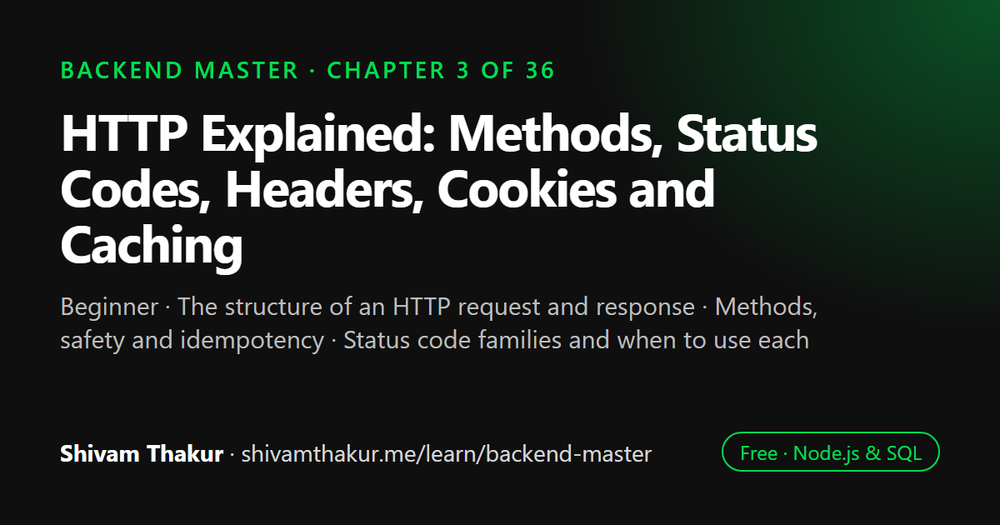

Chapter 3 of 36 · Beginner
HTTP Explained: Methods, Status Codes, Headers, Cookies and Caching
HTTP Deep Dive — The Language Every API Speaks

HTTP is the request-response protocol every web API speaks. This chapter covers requests and responses on the wire, safe and idempotent methods, the status code families, essential headers, cookies, caching and the differences between HTTP/1.1, HTTP/2 and HTTP/3, with runnable examples.
In this chapter you will learn
- The structure of an HTTP request and response
- Methods, safety and idempotency
- Status code families and when to use each
- Headers, cookies and content negotiation
- HTTP caching basics and protocol versions
3.0 Why This Chapter Matters
HTTP is the single most important protocol in a backend engineer's life. REST, GraphQL, webhooks, OAuth, cookies, caching, CORS, load balancers: all of them are HTTP concepts wearing different hats. If you truly understand HTTP, a huge fraction of backend work stops being mysterious.
After this chapter you'll be able to:
- Read and write raw HTTP messages by eye.
- Choose the right method and status code every time.
- Explain exactly how headers, cookies, caching and CORS work (and why CORS errors happen).
- Choose between HTTP/1.1, HTTP/2 and HTTP/3 and explain what changed.
- Debug any API call with
curl.
3.1 HTTP in One Sentence
HTTP is a request-response protocol where a client sends a text-based message describing what it wants, and the server replies with a text-based message describing the result.
Two properties define its character:
- Request-response. Always one question, one answer. The client asks first.
- Stateless. The server treats every request as brand new; it doesn't remember previous ones. "Who are you again?" is answered by sending identity (a cookie, a token) with every request.
Why stateless?
Because it makes servers easy to scale. If request #2 doesn't depend on a particular server remembering request #1, any of 50 servers can answer it. Statelessness is the single biggest reason the web scaled. (Where state does need to exist, we move it to a database, a cache, or the client itself. Chapters 19, 21, 29.)
Real-Life Analogy: A Drive-Through With Amnesia
Every time you pull up, the person at the window has zero memory of you. So each time you must say who you are and what you want ("Member #123, one coffee"). It's repetitive, but any window, at any branch, can serve you, and no one has to maintain a customer-memory system.
3.2 Anatomy of an HTTP Message
The request
POST /orders?source=app HTTP/1.1 ← request line: METHOD, target, version
Host: api.shopline.com ┐
Content-Type: application/json │ headers: "Name: value"
Authorization: Bearer eyJhbGciOi... │
Content-Length: 41 ┘
← blank line: headers end
{"productId": 7, "quantity": 2} ← body (optional)The response
HTTP/1.1 201 Created ← status line: version, code, reason
Content-Type: application/json ┐ headers
Location: /orders/9912 │
Content-Length: 58 ┘
← blank line
{"id": 9912, "productId": 7, "quantity": 2} ← bodyEach line ends with \r\n (CRLF). A blank line separates headers from the body. That is the entire format.
Anatomy of a URL
https://user@api.shopline.com:8443/v1/products/42?color=red&sort=price#reviews
└─┬──┘ └──┬─┘ └──────┬──────┘└─┬─┘└──────┬───────┘└────────┬────────┘└──┬───┘
scheme userinfo host port path query fragment- Scheme: protocol (
http,https). - Host + port: where to connect (port defaults: 80 / 443).
- Path: which resource.
- Query string: key=value options,
&-separated. Must be URL-encoded (a b→a%20b). - Fragment (
#reviews): processed only by the browser; never sent to the server.
Seeing it in Node: read everything the client sent
// inspector.js
const http = require('node:http');
http.createServer((req, res) => {
const url = new URL(req.url, `http://${req.headers.host}`);
let body = '';
req.on('data', (chunk) => (body += chunk));
req.on('end', () => {
const info = {
method: req.method,
path: url.pathname,
query: Object.fromEntries(url.searchParams),
headers: req.headers,
body,
};
res.setHeader('Content-Type', 'application/json');
res.end(JSON.stringify(info, null, 2));
});
}).listen(3000, () => console.log('Inspector on 3000'));curl -X POST "http://localhost:3000/orders?source=app" \
-H "Content-Type: application/json" \
-d '{"productId":7,"quantity":2}'Output (abridged):
{
"method": "POST",
"path": "/orders",
"query": { "source": "app" },
"headers": {
"host": "localhost:3000",
"user-agent": "curl/8.4.0",
"accept": "*/*",
"content-type": "application/json",
"content-length": "31"
},
"body": "{\"productId\":7,\"quantity\":2}"
}Notice Node lower-cases header names. HTTP header names are case-insensitive.
3.3 HTTP Methods
The method tells the server the intent.
| Method | Intent | Has body? | Safe? | Idempotent? |
|---|---|---|---|---|
| GET | Read a resource | No | ✅ | ✅ |
| HEAD | Like GET but headers only | No | ✅ | ✅ |
| POST | Create / trigger an action | Yes | ❌ | ❌ |
| PUT | Replace a resource entirely | Yes | ❌ | ✅ |
| PATCH | Modify part of a resource | Yes | ❌ | Not guaranteed |
| DELETE | Remove a resource | Usually no | ❌ | ✅ |
| OPTIONS | "What can I do here?" (CORS preflight) | No | ✅ | ✅ |
Two critical definitions
- Safe: doesn't change server state. A crawler or prefetcher may call it freely. That's why you must never delete things with a GET link: a search-engine bot will happily "click" every link.
- Idempotent: doing it once or ten times leaves the server in the same state.
DELETE /orders/5ten times → the order is gone (after the first).POST /ordersten times → ten orders (usually).
Why idempotency is a big deal
Networks fail. A client sends POST /payments, the connection drops, and it doesn't know whether the payment happened. Should it retry? If the operation isn't idempotent, a retry may charge the customer twice. The industry solution is the idempotency key, a unique ID the client sends so the server can recognize duplicates (Chapters 8 and 26). Keep this in mind; it's a favorite interview topic.
PUT vs PATCH
Existing: { "name": "Pen", "price": 15, "stock": 100 }
PUT /products/2 { "name": "Pen", "price": 18 }
→ replaces the whole thing: { "name": "Pen", "price": 18 } (stock is gone!)
PATCH /products/2 { "price": 18 }
→ changes only price: { "name": "Pen", "price": 18, "stock": 100 }3.4 Status Codes
The status code is a 3-digit number whose first digit is the class:
| Class | Meaning | Think |
|---|---|---|
| 1xx | Informational | "Hold on…" |
| 2xx | Success | "Done." |
| 3xx | Redirection | "Look over there." |
| 4xx | Client error | "You messed up." |
| 5xx | Server error | "I messed up." |
The ones you must know cold
2xx: Success
| Code | Name | Use when |
|---|---|---|
| 200 | OK | Successful read / update with a response body |
| 201 | Created | A resource was created (include Location header) |
| 202 | Accepted | Request accepted for background processing (not done yet) |
| 204 | No Content | Success, nothing to return (typical for DELETE) |
3xx: Redirects
| Code | Name | Use when |
|---|---|---|
| 301 | Moved Permanently | URL changed forever (SEO transfers) |
| 302 | Found | Temporary redirect |
| 304 | Not Modified | Cached copy is still valid (see §3.8) |
| 307 / 308 | Temp / Permanent Redirect | Like 302/301, but preserve the method (POST stays POST) |
4xx: The client's fault
| Code | Name | Use when |
|---|---|---|
| 400 | Bad Request | Malformed JSON, failed validation |
| 401 | Unauthorized | Not authenticated (missing/invalid credentials). Really means "unauthenticated" |
| 403 | Forbidden | Authenticated, but not allowed |
| 404 | Not Found | Resource doesn't exist |
| 405 | Method Not Allowed | Wrong method for this path (send Allow header) |
| 409 | Conflict | State conflict: duplicate email, edit conflict |
| 413 | Payload Too Large | Body exceeds limit |
| 415 | Unsupported Media Type | Wrong Content-Type |
| 422 | Unprocessable Content | Syntactically valid but semantically invalid |
| 429 | Too Many Requests | Rate limited (send Retry-After) |
5xx: The server's fault
| Code | Name | Use when |
|---|---|---|
| 500 | Internal Server Error | Unhandled bug |
| 502 | Bad Gateway | A proxy got an invalid response from your app |
| 503 | Service Unavailable | Overloaded or down for maintenance (send Retry-After) |
| 504 | Gateway Timeout | A proxy waited too long for your app |
401 vs 403: the classic confusion
- 401: "I don't know who you are." → log in.
- 403: "I know exactly who you are, and the answer is no." → logging in again won't help.
No token sent → 401
Valid token, but regular user
tries to open the admin page → 4033.5 Headers
Headers are the metadata of HTTP. They fall into a few groups.
Request headers (client → server)
| Header | Purpose | Example |
|---|---|---|
Host |
Which site (lets one IP host many domains). Required in HTTP/1.1 | Host: api.shopline.com |
User-Agent |
Who is calling | curl/8.4.0 |
Accept |
Formats the client can handle | Accept: application/json |
Accept-Language |
Preferred languages | en-IN, hi;q=0.8 |
Accept-Encoding |
Compression supported | gzip, br |
Authorization |
Credentials | Bearer <token> |
Cookie |
Cookies the browser sends back | session=abc123 |
Content-Type |
Format of the request body | application/json |
Content-Length |
Body size in bytes | 41 |
Origin |
Where a cross-origin request came from (CORS) | https://shopline.com |
If-None-Match |
Conditional request using an ETag | "v42" |
Response headers (server → client)
| Header | Purpose | Example |
|---|---|---|
Content-Type |
Format of the response body | application/json; charset=utf-8 |
Content-Length |
Size of body | 58 |
Content-Encoding |
Compression applied | gzip |
Set-Cookie |
Ask the client to store a cookie | sid=abc; HttpOnly; Secure |
Location |
Where to go (redirects, 201) | /orders/9912 |
Cache-Control |
Caching rules | public, max-age=3600 |
ETag |
Version fingerprint of the content | "33a64df5" |
Retry-After |
When to retry (429/503) | 120 |
Access-Control-Allow-Origin |
CORS permission | https://shopline.com |
Strict-Transport-Security |
"Only use HTTPS for this site" | max-age=31536000 |
Custom headers
You may invent your own: X-Request-Id: 8f3a.... The old convention prefixed these with X-; the prefix is no longer required, but you'll see it everywhere. A request ID header that you generate, log and return is gold for debugging (Chapter 25).
Content negotiation
The client says what it accepts; the server picks:
Accept: application/json → server replies JSON
Accept: text/html → server replies HTML
Accept-Encoding: gzip, br → server may compress
Accept-Language: hi → server may reply in HindiContent-Type is the translator
The same bytes mean different things depending on Content-Type. Common ones:
| Content-Type | Body looks like |
|---|---|
application/json |
{"a":1} |
application/x-www-form-urlencoded |
a=1&b=2 (classic HTML form) |
multipart/form-data |
File uploads (boundary-separated parts) |
text/plain, text/html |
Text / HTML |
application/octet-stream |
Raw binary |
3.6 Query, Path and Body: Where Does Data Go?
Three places to put input. Choosing wisely keeps APIs predictable.
| Place | Use for | Example |
|---|---|---|
| Path | Identifying a resource | /products/42 |
| Query string | Filtering, sorting, paging, options | /products?category=pens&sort=price&page=2 |
| Body | The data being created/updated (large or sensitive) | POST /orders + JSON |
| Headers | Metadata about the request (auth, format, tracing) | Authorization, Accept |
Rules of thumb:
- Never put secrets in the URL (passwords, tokens). URLs end up in browser history, server logs, proxies and the
Refererheader. - GET requests shouldn't have bodies (many tools drop them).
- URL length has practical limits (~2,000 chars is safe); large payloads go in the body.
3.7 Cookies: Statelessness's Workaround
HTTP forgets you. How does a shop remember your cart or that you're logged in? Cookies: small key-value pieces of data the server asks the browser to store and send back on every later request to that site.
1. POST /login (credentials)
2. ◀── 200 OK
Set-Cookie: sid=abc123; HttpOnly; Secure; SameSite=Lax; Max-Age=86400
3. GET /orders
Cookie: sid=abc123 ← browser attaches it automatically
4. ◀── server looks up "abc123" → "this is Asha" → returns her ordersThe attributes that keep cookies safe
| Attribute | Meaning | Why it matters |
|---|---|---|
HttpOnly |
JavaScript can't read it | Stops XSS from stealing the session |
Secure |
Sent only over HTTPS | Prevents sniffing |
SameSite=Lax / Strict / None |
Controls sending on cross-site requests | Main defense against CSRF |
Max-Age / Expires |
Lifetime | Session vs persistent |
Domain / Path |
Scope | Which hosts/paths receive it |
Defaults to remember: a session cookie should be HttpOnly; Secure; SameSite=Lax (or Strict) unless you have a reason not to.
Setting and reading cookies in raw Node
// cookies.js
const http = require('node:http');
http.createServer((req, res) => {
const cookies = Object.fromEntries(
(req.headers.cookie || '')
.split('; ')
.filter(Boolean)
.map((c) => c.split('='))
);
if (req.url === '/login') {
res.setHeader('Set-Cookie', 'sid=abc123; HttpOnly; SameSite=Lax; Max-Age=3600; Path=/');
return res.end('logged in\n');
}
res.end(cookies.sid ? `hello, session ${cookies.sid}\n` : 'who are you?\n');
}).listen(3000);curl -i -c jar.txt http://localhost:3000/login # -c saves cookies to a "jar"
curl -b jar.txt http://localhost:3000/ # -b sends them backOutput of the second command:
hello, session abc123(Production code must never use a guessable value like abc123; Chapter 21 covers secure session IDs.)
Cookies vs tokens (preview)
Cookies are sent automatically by browsers; mobile apps and other servers usually send an explicit Authorization: Bearer <token> header. We compare both in Chapter 21.
3.8 HTTP Caching
The fastest request is the one never made. HTTP has caching built into the protocol, so browsers, CDNs and proxies can reuse responses without bothering your server.
3.8.1 Cache-Control
Cache-Control: public, max-age=3600 → anyone may cache for 1 hour
Cache-Control: private, max-age=600 → only the user's browser may cache (personalized)
Cache-Control: no-store → never store (sensitive data)
Cache-Control: no-cache → may store, but MUST revalidate before use
Cache-Control: max-age=31536000, immutable → fingerprinted static assets (app.9f3a.js)Beginners confuse no-cache and no-store: no-cache does not mean "don't cache." It means "check with the server before reusing." no-store means "do not keep a copy at all."
3.8.2 Revalidation with ETag (conditional requests)
After the cache lifetime expires, the client doesn't need to re-download an unchanged file. It asks:
FIRST REQUEST
GET /products/42
◀── 200 OK
ETag: "v7"
Cache-Control: max-age=60
{ ...2 KB of JSON... }
LATER (after 60 s)
GET /products/42
If-None-Match: "v7" ← "I have version v7; changed?"
◀── 304 Not Modified ← "No. Use your copy." (no body, tiny)A 304 saves bandwidth and processing. (You still pay the round trip, but not the payload and, if designed well, not the DB work.)
3.8.3 Try it
// etag-server.js
const http = require('node:http');
const crypto = require('node:crypto');
const product = { id: 42, name: 'Notebook', price: 120 };
http.createServer((req, res) => {
const body = JSON.stringify(product);
const etag = `"${crypto.createHash('md5').update(body).digest('hex')}"`;
res.setHeader('Content-Type', 'application/json');
res.setHeader('ETag', etag);
res.setHeader('Cache-Control', 'public, max-age=10');
if (req.headers['if-none-match'] === etag) {
res.statusCode = 304;
return res.end();
}
res.end(body);
}).listen(3000);curl -i http://localhost:3000/
# → 200 OK, ETag: "5b1c..."
curl -i -H 'If-None-Match: "5b1c..."' http://localhost:3000/ # paste the real etag
# → 304 Not Modified (no body)(MD5 here is just a fingerprint, not a security feature.)
3.8.4 Who caches?
browser cache ──▶ CDN / shared proxy cache ──▶ your reverse proxy ──▶ app ──▶ DB cache
private public (shared)private vs public decides whether shared caches (CDNs) may store a response. Caching a personalized response as public can leak one user's data to another. That bug has caused real data breaches.
3.9 CORS: The Most Misunderstood Error in Web Development
You build a frontend at http://localhost:5173 and call your API at http://localhost:3000. The browser blocks it:
Access to fetch at 'http://localhost:3000/products' from origin 'http://localhost:5173'
has been blocked by CORS policy: No 'Access-Control-Allow-Origin' header is present.3.9.1 First: the Same-Origin Policy
A browser lets a page read responses only from its own origin. An origin is scheme + host + port:
https://shopline.com ← origin A
https://shopline.com/cart ← same origin as A
http://shopline.com ← different (scheme)
https://api.shopline.com ← different (host)
https://shopline.com:8443 ← different (port)Why does this rule exist? Without it, any website you visit could run JavaScript that calls https://yourbank.com/transfer using your logged-in cookies and read the results. The Same-Origin Policy is a pillar of web security.
3.9.2 What CORS is
CORS (Cross-Origin Resource Sharing) is the controlled loosening of that rule. The server tells the browser which other origins may read its responses, through headers.
Crucial facts:
- CORS is enforced by the browser, not the server.
curland Postman ignore it. If "it works in Postman but not in the browser," it's CORS. - CORS protects users, not your API. It doesn't stop attackers calling your API directly; that's what authentication is for.
- The fix lives on the server (your backend sets headers), never in the frontend code.
3.9.3 Simple vs preflighted requests
For "simple" requests (GET/HEAD/POST with basic content types and no custom headers), the browser just sends the request with an Origin header and checks the response for permission.
For anything else (PUT, DELETE, PATCH, Content-Type: application/json, custom headers like Authorization), the browser first sends a preflight OPTIONS request, a polite "may I?":
PREFLIGHT
OPTIONS /orders
Origin: http://localhost:5173
Access-Control-Request-Method: POST
Access-Control-Request-Headers: content-type, authorization
◀── 204 No Content
Access-Control-Allow-Origin: http://localhost:5173
Access-Control-Allow-Methods: GET, POST, PUT, DELETE
Access-Control-Allow-Headers: content-type, authorization
Access-Control-Max-Age: 600 ← cache this permission for 10 min
ACTUAL REQUEST (only if preflight passed)
POST /orders Origin: http://localhost:5173
◀── 201 Created
Access-Control-Allow-Origin: http://localhost:51733.9.4 A correct CORS handler in raw Node
// cors-server.js
const http = require('node:http');
const ALLOWED = new Set(['http://localhost:5173', 'https://shopline.com']);
http.createServer((req, res) => {
const origin = req.headers.origin;
if (origin && ALLOWED.has(origin)) {
res.setHeader('Access-Control-Allow-Origin', origin);
res.setHeader('Vary', 'Origin'); // response differs by Origin → caches must know
res.setHeader('Access-Control-Allow-Credentials', 'true');
}
if (req.method === 'OPTIONS') { // preflight
res.setHeader('Access-Control-Allow-Methods', 'GET,POST,PUT,PATCH,DELETE');
res.setHeader('Access-Control-Allow-Headers', 'Content-Type, Authorization');
res.setHeader('Access-Control-Max-Age', '600');
res.statusCode = 204;
return res.end();
}
res.setHeader('Content-Type', 'application/json');
res.end(JSON.stringify([{ id: 1, name: 'Notebook' }]));
}).listen(3000);(In Express you'll use the cors package, which does exactly this; Chapter 7.)
3.10 Redirects, Compression and Connections
Redirects
GET /old-page
◀── 301 Moved Permanently
Location: /new-page
(client automatically requests /new-page)Use 301/308 for permanent moves and 302/307 for temporary ones. Redirecting http:// → https:// is a 301/308 handled at the proxy.
Compression
JSON and HTML compress very well. The client says Accept-Encoding: gzip, br; the server replies with Content-Encoding: gzip. This often cuts payloads by 70–90%. Usually the reverse proxy/CDN handles it. Never compress already-compressed data (images, video).
Persistent connections (keep-alive)
In HTTP/1.0 every request opened a new TCP (+TLS) connection, the expensive handshakes from Chapter 2. HTTP/1.1 keeps connections open by default (Connection: keep-alive) so multiple requests share one. When your backend calls other services, use an HTTP agent with keep-alive (Node 19+ enables it by default for the global agent; older code needs new http.Agent({ keepAlive: true })).
3.11 HTTP/1.1 vs HTTP/2 vs HTTP/3
| HTTP/1.1 | HTTP/2 | HTTP/3 | |
|---|---|---|---|
| Format | Text | Binary frames | Binary frames |
| Transport | TCP | TCP | QUIC (UDP) |
| Parallel requests | One at a time per connection (browsers open ~6 connections) | Multiplexed: many streams on one connection | Multiplexed, no TCP head-of-line blocking |
| Header handling | Repeated plain text | HPACK compression | QPACK compression |
| TLS | Optional | Practically required by browsers | Built into QUIC |
| Setup cost | TCP + TLS | TCP + TLS | ~1 RTT (0-RTT on resumption) |
The problems each version fixed
- HTTP/1.1's pain: head-of-line blocking. A slow response blocks the ones behind it on that connection. Workarounds (multiple connections, sprite sheets, bundling files) were hacks.
- HTTP/2 multiplexes many requests over one TCP connection, compresses headers, and removes the need for most hacks. But a lost TCP packet stalls all streams (TCP-level head-of-line blocking).
- HTTP/3 moves to QUIC over UDP, so a lost packet only stalls its own stream, and connection setup is faster. It also survives network changes (Wi-Fi → mobile data) via connection IDs.
What changes for you as a backend developer? Almost nothing in your application code. The semantics (methods, headers, status codes) are identical across versions. Usually the reverse proxy or CDN speaks HTTP/2/3 to browsers, and plain HTTP/1.1 to your Node app. Know the differences conceptually; interviewers love them.
3.12 Talking HTTP With curl (Your Best Debugging Friend)
curl URL # GET, print body
curl -i URL # include response headers
curl -I URL # HEAD request (headers only)
curl -v URL # verbose: DNS/TCP/TLS + both messages
curl -X DELETE URL # custom method
curl -H "Authorization: Bearer TOKEN" URL # add header
curl --json '{"name":"Pen"}' URL # POST JSON (sets Content-Type & Accept)
curl -d 'a=1&b=2' URL # POST form data
curl -F 'file=@photo.jpg' URL # multipart file upload
curl -L URL # follow redirects
curl -o out.json URL # save body to a file
curl -s URL | jq . # pretty-print JSON (needs jq)
curl -w "%{http_code} %{time_total}s\n" -o /dev/null -s URL # status + timing onlyWindows PowerShell note: curl is an alias for Invoke-WebRequest. Use curl.exe to get the real thing.
Postman / Insomnia / Thunder Client give you a GUI, saved collections and environments. Great for exploration; but learn curl too, because it works in scripts, servers, docs and CI.
3.13 Putting It Together: A Tiny, Well-Behaved Products API
A raw-Node API applying everything: correct methods, status codes, headers, validation, errors.
// products-api.js
const http = require('node:http');
let products = [
{ id: 1, name: 'Notebook', price: 120 },
{ id: 2, name: 'Pen', price: 15 },
];
let nextId = 3;
const send = (res, status, data, headers = {}) => {
res.writeHead(status, { 'Content-Type': 'application/json', ...headers });
res.end(data === undefined ? '' : JSON.stringify(data));
};
const readJson = (req) =>
new Promise((resolve, reject) => {
let raw = '';
req.on('data', (c) => {
raw += c;
if (raw.length > 1e6) { reject({ status: 413, message: 'Body too large' }); req.destroy(); }
});
req.on('end', () => {
try { resolve(raw ? JSON.parse(raw) : {}); }
catch { reject({ status: 400, message: 'Invalid JSON' }); }
});
});
http.createServer(async (req, res) => {
try {
const url = new URL(req.url, `http://${req.headers.host}`);
const match = url.pathname.match(/^\/products(?:\/(\d+))?$/);
if (!match) return send(res, 404, { error: 'Not found' });
const id = match[1] ? Number(match[1]) : null;
// GET /products
if (req.method === 'GET' && id === null) return send(res, 200, products);
// GET /products/:id
if (req.method === 'GET') {
const p = products.find((x) => x.id === id);
return p ? send(res, 200, p) : send(res, 404, { error: 'Product not found' });
}
// POST /products
if (req.method === 'POST' && id === null) {
const { name, price } = await readJson(req);
if (typeof name !== 'string' || !name.trim() || typeof price !== 'number' || price < 0) {
return send(res, 422, { error: 'name (string) and price (number >= 0) are required' });
}
const product = { id: nextId++, name: name.trim(), price };
products.push(product);
return send(res, 201, product, { Location: `/products/${product.id}` });
}
// DELETE /products/:id
if (req.method === 'DELETE' && id !== null) {
const before = products.length;
products = products.filter((x) => x.id !== id);
return products.length < before ? send(res, 204) : send(res, 404, { error: 'Product not found' });
}
// Right path, wrong method
return send(res, 405, { error: 'Method not allowed' }, { Allow: 'GET, POST, DELETE' });
} catch (err) {
if (err.status) return send(res, err.status, { error: err.message });
console.error(err);
return send(res, 500, { error: 'Internal server error' }); // never leak internals
}
}).listen(3000, () => console.log('Products API on 3000'));Exercise it:
curl -i http://localhost:3000/products/1
# HTTP/1.1 200 OK ... {"id":1,"name":"Notebook","price":120}
curl -i --json '{"name":"Eraser","price":5}' http://localhost:3000/products
# HTTP/1.1 201 Created
# Location: /products/3
curl -i --json '{"name":"","price":-1}' http://localhost:3000/products
# HTTP/1.1 422 ... {"error":"name (string) and price (number >= 0) are required"}
curl -i -X DELETE http://localhost:3000/products/3
# HTTP/1.1 204 No Content
curl -i -X PUT http://localhost:3000/products/1
# HTTP/1.1 405 Method Not Allowed Allow: GET, POST, DELETECount the concepts in just ~50 lines: methods, 200/201/204/404/405/413/422/500, Location, Allow, JSON handling, body limit, centralized error handling. Frameworks (Express, Fastify) shrink the boilerplate, but these decisions remain yours.
3.14 Edge Cases and Gotchas Checklist
-
Content-Typemissing or wrong → body ignored or mis-parsed. -
res.end()forgotten → client hangs. - Setting headers after the body started →
ERR_HTTP_HEADERS_SENT. - No body-size limit → memory exhaustion by a malicious client.
- Invalid JSON crashes the process → always
try/catchthe parse. - 200 on errors → breaks clients and monitoring.
- Leaking stack traces in 500 responses → information disclosure.
- Secrets in URLs/query strings → end up in logs.
- GET with side effects → crawlers, prefetchers and link previews trigger them.
- CORS
*+ credentials, or reflecting anyOrigin→ security hole. - Caching personalized data as
public→ data leakage between users. - Forgetting
Vary(e.g.,Vary: Origin,Accept-Encoding) → caches serve wrong variants. - Case-sensitivity: paths are case-sensitive; header names are not.
- Trailing slash:
/productsvs/products/are different paths unless you normalize. - Non-idempotent endpoints retried by clients/proxies → duplicate orders/payments.
3.15 Chapter Summary
- HTTP is a stateless, text-based request-response protocol; statelessness enables horizontal scaling.
- A message = start line + headers + blank line + optional body. URLs have scheme, host, port, path, query, fragment (fragment never reaches the server).
- Methods express intent; know safe and idempotent. GET reads, POST creates/acts, PUT replaces, PATCH modifies, DELETE removes.
- Status codes speak for outcome: 2xx success, 3xx redirect, 4xx client error, 5xx server error. 401 = unauthenticated, 403 = forbidden.
- Headers carry metadata: content negotiation, auth, caching, cookies, CORS.
- Cookies give state to a stateless protocol; protect with
HttpOnly,Secure,SameSite. - Caching (
Cache-Control,ETag, 304) is the cheapest performance win;privatevspublicmatters for security. - CORS is a browser-enforced relaxation of the same-origin policy, configured by the server with an allow-list.
- HTTP/2 multiplexes; HTTP/3 uses QUIC. Application semantics stay the same.
curl -vis the universal debugger.
3.16 Revision Notes
- Request:
METHOD /path HTTP/1.1+ headers + blank line + body. Response:HTTP/1.1 CODE Reason+ headers + blank + body. - Safe = no state change (GET, HEAD, OPTIONS). Idempotent = repeat-safe (GET, PUT, DELETE, HEAD, OPTIONS).
- 200 OK, 201 Created (+Location), 204 No Content, 301/308 permanent, 302/307 temporary, 304 not modified, 400 bad request, 401 unauthenticated, 403 forbidden, 404 not found, 405 wrong method, 409 conflict, 422 invalid, 429 rate limit, 500 bug, 502/503/504 gateway/overload/timeout.
- Cookie flags:
HttpOnly; Secure; SameSite. no-store= don't keep;no-cache= revalidate first;private= browser only;public= shared OK.- Origin = scheme + host + port. Preflight =
OPTIONS. CORS is enforced by browsers only. Varytells caches which request headers change the response.
3.17 Mind Map (ASCII)
HTTP (Ch. 3)
│
┌──────────┬───────────┬──────────┼───────────┬───────────┬──────────┐
MESSAGE METHODS STATUS HEADERS STATE/COOKIES CACHING CORS
│ │ │ │ │ │ │
start line GET POST 1xx info Host Accept Set-Cookie max-age origin =
headers PUT PATCH 2xx ok Auth Cookie HttpOnly ETag/304 scheme+host
blank line DELETE 3xx move Content-Type Secure no-store +port
body safe / 4xx you Cache-Control SameSite private/ preflight
URL parts idempotent 5xx us custom X-* sessions public OPTIONS
Vary allow-list
VERSIONS: 1.1 text/TCP → 2 binary+multiplex → 3 QUIC/UDP3.18 Cheat Sheet
REQUEST METHOD /path?query HTTP/1.1 ⏎ Header: v ⏎ ⏎ body
RESPONSE HTTP/1.1 200 OK ⏎ Header: v ⏎ ⏎ body
METHODS GET read | POST create/act | PUT replace | PATCH modify | DELETE remove
SAFE GET HEAD OPTIONS IDEMPOTENT GET HEAD PUT DELETE OPTIONS
CREATE → 201 + Location DELETE → 204 VALIDATION → 400/422
NOT LOGGED IN → 401 NOT ALLOWED → 403 MISSING → 404
DUPLICATE/CONFLICT → 409 RATE LIMIT → 429 + Retry-After
BUG → 500 OVERLOAD → 503 PROXY TIMEOUT → 504
COOKIE Set-Cookie: sid=...; HttpOnly; Secure; SameSite=Lax; Max-Age=3600
CACHE Cache-Control: public, max-age=3600 | private | no-store | no-cache
ETag: "v1" ⇄ If-None-Match: "v1" → 304
CORS Access-Control-Allow-Origin: <specific origin> (+ Vary: Origin)
Preflight: OPTIONS → Allow-Methods / Allow-Headers / Max-Age
CURL -i headers | -v verbose | -X METHOD | -H header | --json body | -L follow
GOLDEN Right method, right status code, never leak internals, never trust input.3.19 Key Takeaways
- HTTP is simple text; mastering its vocabulary (methods, statuses, headers) makes every framework easier.
- Statelessness is a feature: state is carried by cookies/tokens, with real state in databases.
- Pick methods by intent and status codes by outcome; design for idempotency because networks retry.
- Caching headers are free performance, but get
private/publicandVaryright. - CORS is a browser rule you configure from the server with an allow-list; it's not authentication.
- Debug with raw tools (
curl -v, an inspector server) before blaming frameworks.
3.20 20 Multiple Choice Questions
Tap an answer to check it. Your score updates as you go.
Score: 0 / 0 answered (20 questions)
What does "stateless" mean for HTTP?
Which method is both safe and idempotent?
Which status code should a successful
POSTthat creates a resource return?A user is logged in but tries to open another user's private page. Best response?
Which part of a URL is never sent to the server?
What is
PUTprimarily for?Cache-Control: no-cachemeans:What response does a server give when a client's
If-None-Matchmatches the current ETag?Which cookie flag prevents JavaScript from reading the cookie?
CORS errors are enforced by:
Why does a preflight request exist?
Which HTTP method is used for a CORS preflight?
Two URLs have the same origin if they share:
Which is a valid reason to return 409?
Why should
res.status(200).json({ error })be avoided?Which header tells the server the format of the request body?
What problem does HTTP/2 multiplexing solve?
HTTP/3 is built on:
What's wrong with
Access-Control-Allow-Origin: *on an authenticated API using cookies?Why is idempotency important for payment endpoints?
Show the answer key
1-b, 2-b, 3-b, 4-b, 5-c, 6-b, 7-b, 8-b, 9-c, 10-b, 11-b, 12-c, 13-b, 14-b, 15-b, 16-b, 17-b, 18-b, 19-b, 20-b
3.21 20 Hands-on Exercises
Easy
- Use
curl -v https://example.comand label the request line, three headers, and the status line. - Use
curl -Ion five sites. Which returnCache-Control,ETag,Server? - Run
inspector.js. Send a GET, a POST with JSON and a POST with form data. Compare thecontent-typeand body. - Fetch a URL that redirects with
curl -i, then withcurl -iL. Describe the difference. - Request a missing page on any site. Which status code appears? Then force a 405 on your API.
- Open browser dev tools → Network tab, load a site, and find an example of a 304 and a cached (200 from disk cache) response.
- Write down the origin of five URLs and mark which pairs are same-origin.
Medium
- Add
PUT /products/:id(full replace, 200/404/422) to the products API. - Add
PATCH /products/:idthat accepts partial fields and validates only the ones present. - Add
GET /products?minPrice=20&sort=pricefiltering and sorting. Use a query string; return400for a badminPrice. - Add an
X-Request-Idheader: reuse the incoming one if present, else generate withcrypto.randomUUID(); log it and echo it back. - Implement
gzipfor responses over 1 KB usingzlibwhenAccept-Encodingincludes gzip. Compare sizes withcurl --compressed -w "%{size_download}". - Implement the cookie login demo with a random session ID (
crypto.randomBytes(16).toString('hex')) and an in-memory session map. Add/logoutthat expires the cookie. - Build a 429 rate limiter: max 5 requests per 10 seconds per IP, returning
Retry-After.
Hard
- Make the ETag server compute the ETag from real data and reload on change; verify with curl that you get 200 → 304 → 200 after modifying the data.
- Create a tiny frontend page on
localhost:5173(e.g.,npx serve) thatfetches your API on:3000. Reproduce the CORS error, then fix it with the allow-list handler, including aPOSTwith JSON (preflight). - Add idempotency to
POST /orders: accept anIdempotency-Keyheader, store results in memory, and return the same response (with the same order id) for duplicates. - Make the server stream a large JSON array (10,000 items) using chunked writes (
res.write) rather than building one string, and observe memory use. - Write a raw TCP client (Chapter 2 style) that sends two HTTP/1.1 requests over a single keep-alive connection and prints both responses.
- Write a script that fires 200 sequential requests and 200 concurrent requests at your API with and without keep-alive (
http.Agent), and report total time for each of the four cases.
3.22 5 Interview Questions
1. Explain the difference between PUT, PATCH and POST. Which are idempotent? Model answer: POST creates a subordinate resource or triggers an action; not idempotent. PUT replaces a resource at a known URL with the supplied representation; idempotent. PATCH applies a partial modification; may or may not be idempotent depending on the operation (setting a field is; "increment by 1" isn't). Idempotency matters for retries.
2. What's the difference between 401 and 403? Model answer: 401 means the request lacks valid authentication, so the client should authenticate. 403 means the server knows who the client is but refuses access. Sometimes 404 is used instead of 403 to avoid revealing that a resource exists.
3. How does HTTP caching work, and how would you cache an API response safely?
Model answer: The server sets Cache-Control for freshness (max-age, public/private), and ETag/Last-Modified for validation. After expiry clients send conditional requests and receive 304 if unchanged. For personalized data use private or no-store; add Vary for headers that change the response; use versioned URLs for immutable assets.
4. Why do I get a CORS error in the browser but not in Postman, and how do I fix it?
Model answer: CORS is a browser-enforced restriction from the same-origin policy; Postman isn't a browser and ignores it. Fix it server-side: respond to preflight OPTIONS and return Access-Control-Allow-Origin (a specific allowed origin from an allow-list), plus allowed methods and headers, and Allow-Credentials if using cookies. Don't use * with credentials or reflect arbitrary origins.
5. HTTP is stateless. How do web apps remember who you are?
Model answer: State is passed on each request: cookies (session ID stored server-side in a DB/Redis) or tokens such as JWTs in the Authorization header. The server stays stateless w.r.t. the protocol and keeps state in shared storage so any instance can serve any request. Cookies should be HttpOnly; Secure; SameSite.
3.23 3 Real Projects
Project 1: HTTP Playground (beginner, ~2 hours).
Extend the inspector into a mini "httpbin": endpoints /status/:code (returns that status), /delay/:ms (responds after a delay), /headers, /cookies/set?name=value, /redirect/:n (redirects n times). Use it to experiment with curl and your future clients.
Project 2: Cache-Aware Static File Server (intermediate, ~4 hours).
Serve files from a folder with correct Content-Type by extension, ETag from file mtime+size, Last-Modified, If-None-Match/If-Modified-Since → 304, Range support (206 Partial Content), gzip, and path-traversal protection (../ must not escape the folder). Compare behavior to npx serve.
Project 3: Rate-Limited, Idempotent Mini Payments API (intermediate–advanced, ~5 hours).
POST /payments with Idempotency-Key, GET /payments/:id, proper statuses (201, 200 on replay, 409 on key reuse with a different body, 422, 429 with Retry-After), request IDs in logs, and CORS allow-list. Write 10 curl scripts that prove each behavior. This is the skeleton of every serious payment integration.
3.24 Further Reading
- MDN Web Docs: HTTP section (Overview, Methods, Status, Headers, Caching, CORS). Authoritative and readable.
- RFC 9110 (HTTP Semantics) and RFC 9111 (HTTP Caching): dense but definitive; skim the tables.
- High Performance Browser Networking, chapters on HTTP/1.1, HTTP/2 and QUIC.
- HTTP: The Definitive Guide (older, but explains the fundamentals well).
curlmanual and the "Everything curl" book (everything.curl.dev).
Up next → Chapter 4: Linux, Terminal, Git & Dev Environment
Now that you speak HTTP, we need a comfortable workshop: the terminal, Linux basics (where your servers will actually live), permissions, processes, environment variables, SSH and a Git workflow you can use on any team.
HTTP Explained: frequently asked questions
What is the difference between GET and POST?
GET retrieves data and is safe and idempotent, so it can be cached and retried. POST sends data to create or process something and is neither safe nor idempotent, so repeating it can repeat the effect.
What is the difference between 401 and 403?
401 means the request is not authenticated: the server does not know who you are. 403 means you are authenticated but not allowed to do that action.
What does idempotent mean?
An operation is idempotent if doing it several times has the same effect as doing it once. GET, PUT and DELETE are idempotent by definition; POST is not, which is why retries need idempotency keys.
What changed in HTTP/2 and HTTP/3?
HTTP/2 multiplexes many requests over one connection and compresses headers. HTTP/3 runs over QUIC (UDP) to avoid head-of-line blocking at the transport layer and speed up connection setup.